1.4 Circular measure
Radians · arc length · sector area · segments and composite regions
本页依据 9709 Mathematics 2026–2027 syllabus 1.4 Circular measure：
- 理解 radian 的定义，并在 radians 与 degrees 之间转换；
- 使用
s=r\theta,\qquad A=\frac12r^2\theta
计算 arc length 与 sector area； - 在 triangles、sectors、segments 和 composite regions 中结合三角函数解决 length、angle、perimeter 与 area 问题。
下列 20 组题目均来自工作区保存的 Paper 1 原始 past-paper PDF。题干只把 PDF 排版符号整理为 LaTeX，没有改写或编造题目；答案按对应 mark scheme 的得分步骤展开。图形只在有助于理解题干时加入，并从原始 PDF 独立提取为 SVG，不使用截图。
1. Core knowledge
Radians and degrees
一个完整圆周是
2\pi\text{ radians}=360^\circ,\qquad \pi\text{ radians}=180^\circ.
因此
\theta_{\text{rad}}=\frac{\pi}{180}\theta_{\text{deg}},\qquad \theta_{\text{deg}}=\frac{180}{\pi}\theta_{\text{rad}}.
在 s=r\theta 与 A=\frac12r^2\theta 中，\theta 必须使用 radians。
Arc length and sector area
对半径为 r、圆心角为 \theta radians 的 sector：
s=r\theta,\qquad A_{\text{sector}}=\frac12r^2\theta.
圆弧对应的 chord length 使用
c=2r\sin\frac{\theta}{2},
三角形面积使用
A_{\triangle}=\frac12ab\sin C.
所以 segment area 通常是 sector area 减去对应 triangle area；composite region 则把 outer sector、inner sector、triangle 和 straight sections 分别计算后相加或相减。
A reliable method
- 先确认题目中的角是 radians，必要时先转换。
- 画出或标记 radius、chord、perpendicular 和 tangent。
- 先用 s=r\theta 或 A=\frac12r^2\theta 求弧长、扇形面积。
- 再用 triangle area、Pythagoras 或 sine rule 处理剩余部分。
- 最后检查边界：perimeter 只加边界，area 只加或减区域；题目要求 exact 时不要过早取小数。
2. Verified Paper 1 past-paper questions
Question 1 · 9709/12/M/J/20 Q7
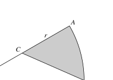
In the diagram, OAB is a sector of a circle with centre O and radius 2r, and angle AOB=\frac16\pi radians. The point C is the midpoint of OA.
- Show that the exact length of BC is r\sqrt{5-2\sqrt3}. [2]
Show detailed mark scheme answer
In triangle OCB, OC=r, OB=2r and \angle COB=\frac{\pi}{6}. By the cosine rule,
BC^2=r^2+(2r)^2-2(r)(2r)\cos\frac{\pi}{6} =r^2(5-2\sqrt3).
Since length is positive,
\boxed{BC=r\sqrt{5-2\sqrt3}}.Question 2 · 9709/11/O/N/20 Q10(a–b)
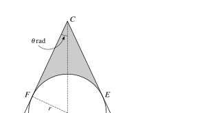
The diagram shows a sector CAB which is part of a circle with centre C. A circle with centre O and radius r lies within the sector and touches it at D, E and F, where COD is a straight line and \angle ACD=\theta radians.
Find CD in terms of r and \sin\theta. [3]
It is now given that r=4 and \theta=\frac16\pi. Find the perimeter of sector CAB in terms of \pi. [3]
Show detailed mark scheme answer
- In the right triangle formed by dropping a perpendicular from O to a side,
r=CO\sin\theta\Longrightarrow CO=\frac{r}{\sin\theta}.
Since C,O,D are collinear and OD=r,
\boxed{CD=CO+OD=\frac{r(1+\sin\theta)}{\sin\theta}}.
- With r=4 and \theta=\pi/6,
CD=\frac{4(1+\frac12)}{\frac12}=12.
The sector angle is 2\theta=\pi/3, so the arc length is 12(\pi/3)=4\pi. Therefore
\boxed{\text{perimeter}=12+12+4\pi=24+4\pi}.Question 3 · 9709/12/O/N/20 Q8
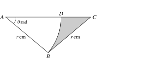
In the diagram, ABC is an isosceles triangle with AB=BC=r cm and angle BAC=\theta radians. The point D lies on AC and ABD is a sector of a circle with centre A.
- Express the area of the shaded region in terms of r and \theta. [3]
Show detailed mark scheme answer
The angles at A and C are both \theta, so \angle ABC=\pi-2\theta. Hence
A_{ABC}=\frac12r^2\sin(\pi-2\theta)=\frac12r^2\sin2\theta.
The sector ABD has radius r and angle \theta, so
A_{ABD}=\frac12r^2\theta.
Thus
\boxed{A_{\text{shaded}}=\frac12r^2(\sin2\theta-\theta)}.Question 4 · 9709/13/O/N/20 Q9
In the diagram, arc AB is part of a circle with centre O and radius 8 cm. Arc BC is part of a circle with centre A and radius 12 cm, where AOC is a straight line.
- Find angle BAO in radians. [2]
Show detailed mark scheme answer
Because AO=OB=8 and AB=12, the cosine rule in triangle AOB gives
\cos\angle BAO=\frac{12^2+8^2-8^2}{2(12)(8)}=\frac34.
Therefore
\boxed{\angle BAO=\cos^{-1}\frac34=0.723\text{ rad (3 s.f.)}}.Question 5 · 9709/11/M/J/21 Q8(a–b)
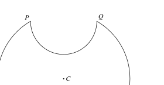
The diagram shows a symmetrical metal plate made by removing two identical pieces from a circular disc with centre C. The radius of the circle with centre C is 4 cm, and PQ=RS=4 cm.
Show that angle PCS=\frac23\pi radians. [2]
Find the exact perimeter of the plate. [3]
Show detailed mark scheme answer
The chord PS has length 4 in a circle of radius 4:
4=2(4)\sin\frac{\angle PCS}{2}.
The angle shown is obtuse, so \angle PCS/2=\pi/3 and
\boxed{\angle PCS=\frac{2\pi}{3}}.
The two original-circle arcs have total length 2(4)(2\pi/3)=16\pi/3. Each semicircle has diameter 4 and length 2\pi, so the two semicircles contribute 4\pi. Thus
\boxed{\text{perimeter}=\frac{28\pi}{3}\text{ cm}}.Question 6 · 9709/13/M/J/21 Q5(a–b)
The diagram shows a triangle ABC in which angle ABC=90^\circ and AB=4 cm. The sector ABD is part of a circle with centre A. The area of the sector is 10 cm^2.
Find angle BAD in radians. [2]
Find the perimeter of the shaded region. [4]
Show detailed mark scheme answer
From the sector area,
\frac12(4)^2\theta=10\Longrightarrow \boxed{\theta=1.25\text{ rad}}.
The arc BD has length 4(1.25)=5. Also
BC=4\tan(1.25)=12.04\ldots,
and
CD=\frac{4}{\cos(1.25)}-4\cos(1.25)=8.69\ldots.
Therefore
\boxed{\text{perimeter}=5+12.04\ldots+8.69\ldots=25.7\text{ cm}}.Question 7 · 9709/12/M/J/21 Q12(a–c)
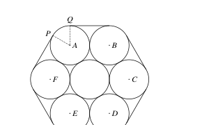
Seven cylindrical pipes each have radius 20 cm. The centres of the six outer pipes are A,B,C,D,E,F. A thin rope is wrapped tightly around the pipes.
Show that angle PAQ=\frac13\pi radians. [2]
Find the length of the rope. [4]
Find the area of hexagon ABCDEF, giving your answer in terms of \sqrt3. [2]
Show detailed mark scheme answer
The six equal angles make a complete turn:
6\angle PAQ=2\pi\Longrightarrow \boxed{\angle PAQ=\frac{\pi}{3}}.
Adjacent outer centres are 40 cm apart. The six straight sections therefore total 6(40)=240 cm. The six exposed arcs total
6\left(20\cdot\frac{\pi}{3}\right)=40\pi.
Thus
\boxed{\text{rope length}=240+40\pi\text{ cm}}.
The regular hexagon is six equilateral triangles of side 40:
6\left(\frac12\cdot40^2\sin\frac{\pi}{3}\right) =\boxed{2400\sqrt3\text{ cm}^2}.Question 8 · 9709/12/O/N/21 Q7(a–b)
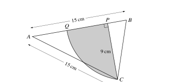
In the diagram, AB=AC=15 cm. P is the foot of the perpendicular from C to AB, CP=9 cm. An arc of a circle with centre B passes through C and meets AB at Q.
Show that angle ABC=1.25 radians, correct to 3 significant figures. [2]
Calculate the area of the shaded region bounded by the arc CQ and the lines CP and PQ. [4]
Show detailed mark scheme answer
AP=\sqrt{15^2-9^2}=12,\qquad BP=15-12=3.
Hence
\boxed{\angle ABC=\tan^{-1}\frac93=1.249\ldots=1.25\text{ rad}}.
Also BC=\sqrt{3^2+9^2}=\sqrt{90}. The shaded region is the sector CBQ minus triangle BCP:
A_{\text{sector}}=\frac12(\sqrt{90})^2\tan^{-1}3=45\tan^{-1}3,
A_{\triangle BCP}=\frac12(3)(9)=13.5.
Therefore
\boxed{A=45\tan^{-1}3-13.5=42.7\text{ cm}^2\text{ (3 s.f.)}}.Question 9 · 9709/11/M/J/22 Q5(a–b)
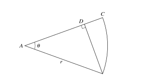
The diagram shows a sector ABC of a circle with centre A and radius r. BD is perpendicular to AC. Angle CAB=\theta radians.
Given \theta=\frac16\pi, find the exact area of BCD in terms of r. [3]
Given instead that the length of BD=\frac{\sqrt3}{2}r, find the exact perimeter of BCD in terms of r. [4]
Show detailed mark scheme answer
A_{\text{sector}}=\frac12r^2\cdot\frac{\pi}{6}=\frac{\pi r^2}{12}.
Also BD=r/2 and AD=\sqrt3r/2, so
A_{\triangle ABD}=\frac12\cdot\frac r2\cdot\frac{\sqrt3r}{2}=\frac{\sqrt3}{8}r^2.
Therefore
\boxed{A_{BCD}=\left(\frac{\pi}{12}-\frac{\sqrt3}{8}\right)r^2}.
- Since BD=r\sin\theta=\sqrt3r/2, \theta=\pi/3. Then AD=r/2, CD=r/2, BD=\sqrt3r/2, and arc BC=r\theta=\pi r/3. Hence
Question 10 · 9709/12/M/J/22 Q7(a–b)
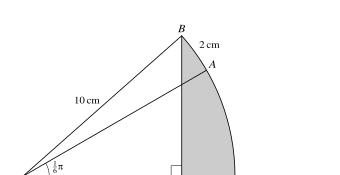
The diagram shows a sector OBAC of a circle with centre O and radius 10 cm. P lies on OC and BP is perpendicular to OC. Angle AOC=\frac16\pi and the length of arc AB is 2 cm.
Find angle BOC. [2]
Hence find the area of the shaded region BPC, correct to 3 significant figures. [4]
Show detailed mark scheme answer
\angle AOB=\frac{2}{10}=0.2.
From the diagram,
\boxed{\angle BOC=\frac{\pi}{6}+0.2=\frac{5\pi+6}{30}=0.724\text{ rad}}.
Let \phi=(5\pi+6)/30. Then BP=10\sin\phi and OP=10\cos\phi. Therefore
A_{BPC}=\frac12(10)^2\phi-\frac12(10\sin\phi)(10\cos\phi) =11.370\ldots,
so
\boxed{A_{BPC}=11.4\text{ cm}^2}.Question 11 · 9709/13/M/J/22 Q9
The diagram shows triangle ABC with AB=BC=6 cm and angle ABC=1.8 radians. The arc CD is part of a circle with centre A and ABD is a straight line.
- Find the perimeter of the shaded region. [5]
Show detailed mark scheme answer
The common radius is
AC=2(6)\sin\frac{1.8}{2}=9.40\text{ cm}.
The base angle is
\angle CAD=\frac{\pi-1.8}{2}=0.6708\text{ rad}.
Thus arc CD has length 9.40(0.6708)=6.306\ldots. Since AD=AC and AB=6, BD=9.40-6=3.40. Hence
\boxed{\text{perimeter}=6+3.40+6.306\ldots=15.7\text{ cm}}.Question 12 · 9709/11/O/N/22 Q5(a–b)
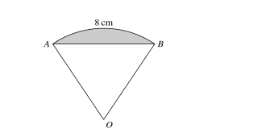
The diagram shows a sector OAB of a circle with centre O. The length of arc AB is 8 cm and the perimeter of the sector is 20 cm.
Find the perimeter of the shaded segment. [4]
Find the area of the shaded segment. [2]
Show detailed mark scheme answer
The two radii total 20-8=12, so r=6. The sector angle is
\theta=\frac sr=\frac86=\frac43\text{ rad}.
The chord is
AB=2(6)\sin\frac23=7.42\ldots,
so
\boxed{P_{\text{segment}}=8+12\sin\frac23=15.4\text{ cm}}.
The sector area is 24, while
A_{\triangle OAB}=\frac12(6)^2\sin\frac43=17.49\ldots.
Therefore
\boxed{A_{\text{segment}}=24-18\sin\frac43=6.51\text{ cm}^2}.Question 13 · 9709/12/O/N/22 Q10(a–c)
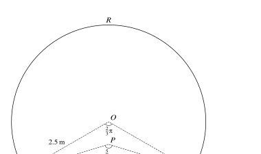
The cross-section RASB consists of a sector OARB of radius 2.5 m with centre O, a sector PASB of radius 2.24 m with centre P, and quadrilateral OAPB. Angle AOB=\frac23\pi and angle APB=\frac56\pi.
Find the perimeter of the cross-section, correct to 2 decimal places. [3]
Find the difference in area of triangles AOB and APB, correct to 2 decimal places. [2]
Find the area of the cross-section, correct to 1 decimal place. [3]
Show detailed mark scheme answer
P=2.5\cdot\frac{2\pi}{3}+2.24\cdot\frac{5\pi}{6} =\boxed{\frac{26\pi}{5}=16.34\text{ m}}.
A_{AOB}=\frac12(2.5)^2\sin\frac{2\pi}{3}=2.706\ldots,
A_{APB}=\frac12(2.24)^2\sin\frac{5\pi}{6}=1.254\ldots.
Thus \boxed{A_{AOB}-A_{APB}=1.45\text{ m}^2}.
- The sector areas are 13.09\ldots and 6.57\ldots. Add the difference from (b):
Question 14 · 9709/12/F/M/23 Q8(a–b)
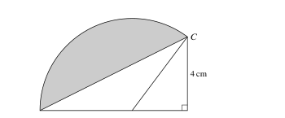
In the diagram, triangle ABC has right angle B, AB=8 cm and BC=4 cm. Point D on AB satisfies AD=5 cm. The sector DAC is part of a circle with centre D.
Find the perimeter of the shaded region. [5]
Find the area of the shaded region. [3]
Show detailed mark scheme answer
In right triangle BDC,
\angle BDC=\tan^{-1}\frac43=0.9273\ldots,\qquad \angle ADC=\pi-\angle BDC=2.214\ldots.
The arc has radius DA=5, so arc AC=5(2.214\ldots)=11.07\ldots. Also AC=\sqrt{8^2+4^2}=8.94\ldots. Therefore
\boxed{P=11.07\ldots+8.94\ldots=20.0\text{ cm}}.
The sector area is \frac12(5)^2(2.214\ldots)=27.7\ldots, and triangle ADC has area \frac12(5)(4)=10. Hence
\boxed{A_{\text{shaded}}=27.7\ldots-10=17.7\text{ cm}^2}.Question 15 · 9709/11/M/J/23 Q4
The diagram shows a sector ABC of radius 8 cm with centre A. The area of the sector is \frac{16\pi}{3} cm^2. Point D lies on the arc BC.
Find the perimeter of the segment BCD. [4]
Show detailed mark scheme answer
\frac12(8)^2\theta=\frac{16\pi}{3}\Longrightarrow\theta=\frac{\pi}{6}.
The arc length is 8(\pi/6)=4\pi/3. The chord is
BC=2(8)\sin\frac{\pi}{12}=16\sin15^\circ.
Therefore
\boxed{P=\frac{4\pi}{3}+16\sin15^\circ=8.33\text{ cm}}.Question 16 · 9709/12/M/J/23 Q6(a–b)
The diagram shows a sector OAB with centre O. Angle AOB=\theta radians and OP=AP=x.
Show that the arc length AB is 2x\theta\cos\theta. [2]
Find the area of the shaded region APB in terms of x and \theta. [4]
Show detailed mark scheme answer
In the isosceles triangle used in the diagram, OA=2x\cos\theta. Hence
\boxed{\text{arc }AB=OA\theta=2x\theta\cos\theta}.
The sector area is
\frac12(2x\cos\theta)^2\theta=2x^2\theta\cos^2\theta.
The triangle removed from the sector has area
\frac12(2x\cos\theta)(x\sin\theta)=x^2\sin\theta\cos\theta.
Therefore
\boxed{A_{APB}=2x^2\theta\cos^2\theta-x^2\sin\theta\cos\theta}.Question 17 · 9709/13/M/J/23 Q6(a–b)
The diagram shows a sector OAB of radius r cm and angle \theta radians. The arc length is 9.6 cm and the sector area is 76.8 cm^2.
Find the area of the shaded region. [5]
Find the perimeter of the shaded region. [2]
Show detailed mark scheme answer
Since A/s=r/2, we have 76.8/9.6=8, so r=16 cm. Then \theta=9.6/16=0.6 rad.
The sector area is 76.8 and the triangle area is
\frac12(16)^2\sin0.6=72.27\ldots.
Thus
\boxed{A_{\text{shaded}}=76.8-72.27\ldots=4.53\text{ cm}^2}.
The chord is 2(16)\sin0.3=9.46\ldots, so
\boxed{P=9.6+9.46\ldots=19.1\text{ cm}}.Question 18 · 9709/11/O/N/23 Q6(a–c)
The motif is formed by the major arc AB of a circle with radius r and centre O, and the minor arc AOB of another circle with radius r and centre C. Point C lies on the circle with centre O.
Given angle ACB=k\pi radians, state k. [1]
State the perimeter of the shaded motif in terms of \pi and r. [1]
Find the area of the shaded motif in terms of \pi, r and \sqrt3. [5]
Show detailed mark scheme answer
The equal radii give the equilateral-triangle configuration, so
\boxed{k=\frac23}.
The two arcs together have length one full circumference:
\boxed{P=2\pi r}.
The major sector has angle 4\pi/3 and area 2\pi r^2/3. Each removed segment has area
\frac{\pi r^2}{6}-\frac{\sqrt3r^2}{4}.
Therefore
\boxed{A=\frac{2\pi r^2}{3} -2\left(\frac{\pi r^2}{6}-\frac{\sqrt3r^2}{4}\right) =\frac{\pi r^2}{3}+\frac{\sqrt3r^2}{2}}.Question 19 · 9709/13/M/J/24 Q3(a–b)
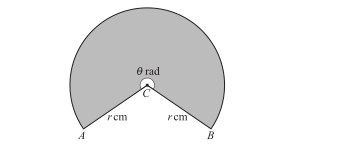
The sector has centre C, radii CA=CB=r cm, and reflex angle ACB=\theta radians. Its perimeter is 65 cm and its area is 225 cm^2.
Find r and \theta. [4]
Find the area of triangle ACB. [2]
Show detailed mark scheme answer
The equations are
2r+r\theta=65,\qquad \frac12r^2\theta=225.
Thus r\theta=450/r and
2r+\frac{450}{r}=65 \Longrightarrow 2r^2-65r+450=0 \Longrightarrow (2r-45)(r-10)=0.
The reflex-angle condition selects r=10 rather than 22.5. Hence
\boxed{r=10\text{ cm},\qquad\theta=\frac{450}{100}=4.5\text{ rad}}.
The triangle uses the smaller angle 2\pi-\theta:
\boxed{A_{\triangle ACB}=\frac12(10)^2\sin(2\pi-4.5)=48.9\text{ cm}^2}.Question 20 · 9709/11/O/N/24 Q3
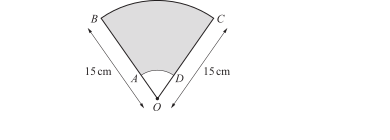
The diagram shows a sector with centre O, where OB=OC=15 cm and angle BOC=\frac25\pi radians. Points A and D are joined by an arc of a circle with centre O. The shaded region has area \frac{209}{5}\pi cm^2.
Find the perimeter of the shaded region, giving your answer in terms of \pi. [5]
Show detailed mark scheme answer
Let the inner radius be x. The area equation is
\frac12(15)^2\frac{2\pi}{5}-\frac12x^2\frac{2\pi}{5} =\frac{209}{5}\pi.
This gives
45\pi-\frac{x^2\pi}{5}=\frac{209\pi}{5} \Longrightarrow x^2=16\Longrightarrow x=4.
The straight sections total 2(15-4)=22. The outer and inner arcs total
15\frac{2\pi}{5}+4\frac{2\pi}{5}=6\pi+\frac{8\pi}{5}.
Therefore
\boxed{P=22+\frac{38\pi}{5}\text{ cm}}.